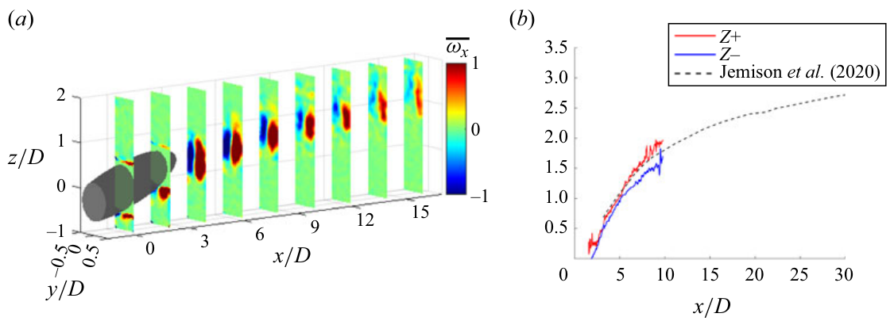
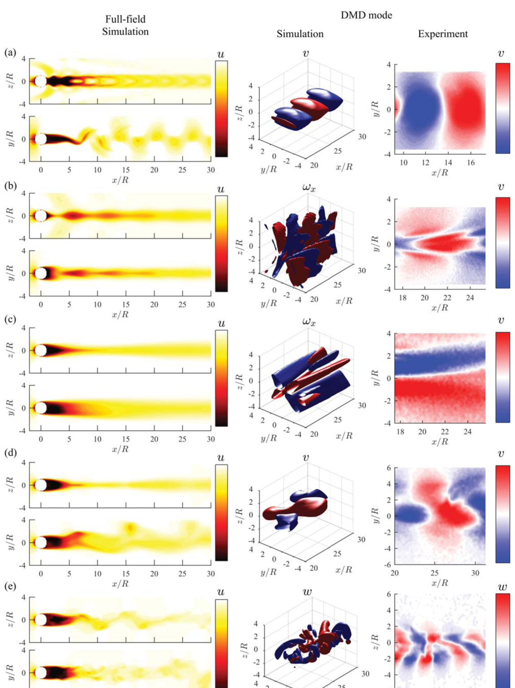
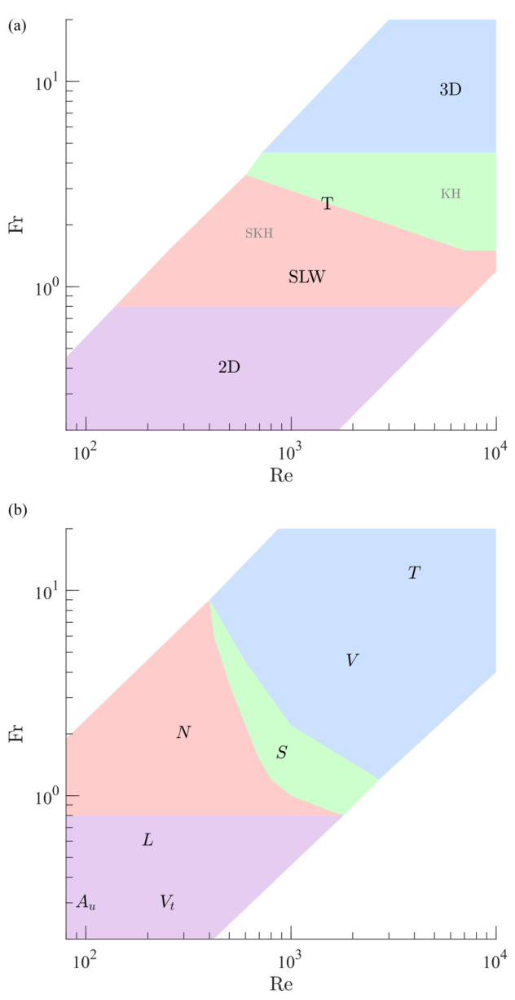

Stratified Wakes and Near-Wake Dynamics
How stable density stratification reshapes wake geometry, vortex organization, and internal-wave signatures.
Postdoctoral Scholar, Marine Physical Laboratory, Scripps Institution of Oceanography, UC San Diego
I combine laboratory experiments and data-driven analysis to understand how density stratification shapes fluid flows in the ocean. My work bridges wake dynamics, modal decomposition, and air-sea interaction.
I am a postdoctoral scholar in the Marine Physical Laboratory at Scripps Institution of Oceanography, UC San Diego, working in the Air-Sea Interaction Laboratory. My research combines laboratory experiments and data-driven analysis to understand how density stratification shapes fluid flows in the ocean.
I received my PhD from the University of Southern California in 2023, where I worked with Prof. Geoffrey Spedding in the Stratified Fluids Laboratory. My dissertation focused on the wakes generated by bluff bodies moving through stratified environments — a problem with direct connections to underwater vehicle hydrodynamics and oceanic turbulence. Using towed experiments in a large stratified water tank and dynamic mode decomposition (DMD), I developed new approaches for identifying and classifying wake regimes from limited flow measurements.
Add a paragraph about your current research in the Air-Sea Interaction Laboratory with Luc Lenain — e.g., surface wave dynamics, air-sea fluxes, upper ocean turbulence, wave breaking, or remote sensing.
Add a forward-looking paragraph for faculty applications, e.g.: “My research program aims to bridge lab-scale stratified flow experiments with field observations, developing new measurement and data-driven techniques for understanding ocean mixing and transport processes.”
Three active themes summarize the current direction of my work.

How stable density stratification reshapes wake geometry, vortex organization, and internal-wave signatures.

Interpretable modal signatures for classifying stratified wake regimes from energetic coherent structures.

Sparse, physically grounded models that support classification even when sensing is partial or noisy.
Add a summary and figure for your Air-Sea Interaction research.
Experiments in uniform and stratified backgrounds quantify how stratification and pitch angle alter near-wake structure and internal-wave signatures, while later evolution converges toward established stratified-wake behavior.
DMD-based features support automated classification of stratified wake regimes and identify data-quality requirements for robust regime discrimination.
A sparse-regression formulation identifies stratified wake regimes from partial observations using interpretable feature libraries.
I welcome conversations about stratified flows, wake dynamics, and data-driven methods in geophysical fluid mechanics.